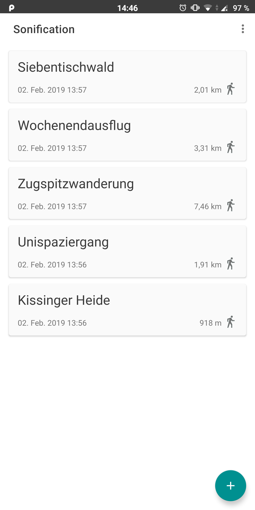
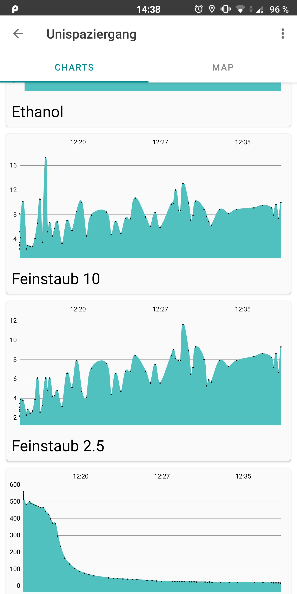
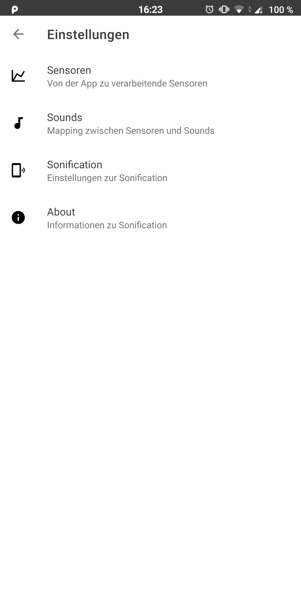

Impressionen
Hier finden Sie einige Screenshots und Videos aus der App.

Überblick
Alle Datensätze auf einen Blick.

Details
Wichtige Informationen sind sofort einsehbar.

Diagramme
Personalisierbares Live-Tracking ankommender Sensordaten.

Karten
Google Maps Integration zum Nachverfolgen der gelaufenen Route.

Einstellungen
Damit Sie die Kontrolle haben.
Sonifikation
Eine Demonstration der eigentlichen Sonifikation.
© Merlin Albes, David Heim, Ralph Stuhler
Lehrstuhl Human Centered Multimedia
Universität Augsburg